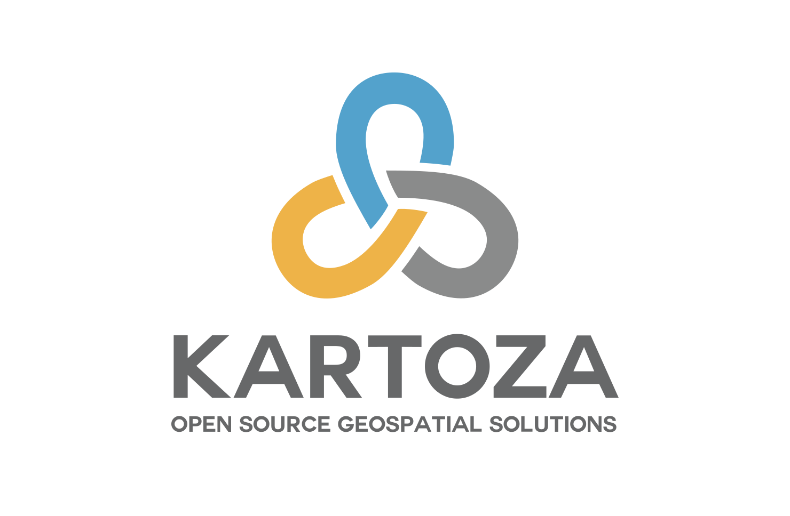
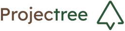
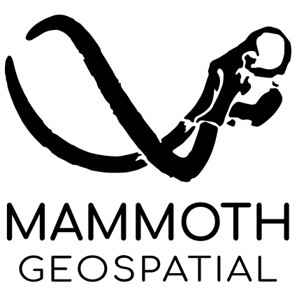
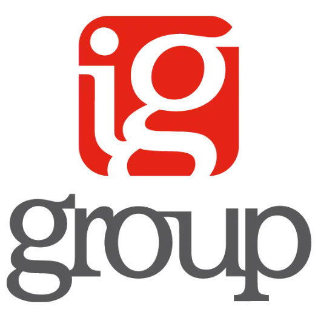

Looking for expert support, training, or consultancy? Our
certified QField Partners offer trusted
services around the world –
helping you get the most out of your field data workflows.
Are you a QField service provider? Get in touch to learn more about joining our Partner Program.
Oslandia is a French company specialized in open source GIS solutions. They provide expertise in QGIS, PostGIS, and QField for data collection workflows with comprehensive training and implementation services.
Meet our partner – one of the most recognizable companies creating, utilizing, and supporting open-source GIS technologies in the UK.

KartozaBased in South Africa and Portugal, Kartoza helps organizations harness open source geospatial tech through expert support and services.

ProjectreeEngineering, environmental, and surveying consultancy. Specialists in environmental licensing and GIS solutions for the Brazilian market.

Mammoth GeospatialBased in Australia, Mammoth Geospatial specialises in open source geospatial systems. We provide expert support, consulting, and training in QGIS, PostGIS, QField, and web mapping systems.
Based in Germany, FeelGood GeoSolutions makes mobile GIS easy with open-source tools and precise GNSS—so you can focus on your real work.
Gispo is a full service GIS house, providing spatial data services for our customers. We specialise in Free and Open Source Software for Geospatial (FOSS4G) tools and technologies.
A leading Polish provider of Open Source GIS (IT/GIS & workshops). Company offers customized IT solutions based on the FOSS4G ecosystem (desktop, web, mobile, DB) while providing technical support (SLA).

IG group SAIG group SA is an engineering and surveying firm in Switzerland that provides surveying, geomonitoring, photogrammetry, civil engineering and geoinformatics services.
EBP is a consulting and engineering firm with about 500 experts dedicated to making a meaningful impact on sustainable development for more than 40 years.
QField is the leading professional fieldwork app used in enterprise settings for efficient geospatial data collection and management. As a Digital Public Good, QField not only excels in enterprise and professional applications but also contributes significantly to advancing at least six of the United Nations Sustainable Development Goals (SDGs), promoting a more sustainable and equitable future.
Subscribe to our newsletter and stay up to date on the latest and greatest!
QField is released under the GNU Public License (GPL) Version 2 or above. Developing QField under this license means that you can inspect and modify the source code and guarantees that you will always have access to a QGIS based field data collection app that is free of cost and can be freely modified.
View the QField Privacy Policy to learn what information is collected, used and how we protect this.
QField, QFieldCloud and QFieldSync are developped by OPENGIS.ch. OPENGIS.ch offers consulting, development, training and support for open-source software including QField, QGIS and PostGIS.
Location: 🇫🇷 France
Services:
Expertise: Oslandia specializes in open-source GIS solutions, with particular focus on QGIS, PostGIS, and 3D/web mapping. They offer comprehensive QField implementation services including data structure design, form creation, and field workflow optimization.
Location: 🇬🇧 United Kingdom
Services:
Expertise: Astun Technology is one of the UK's leading providers of open source geospatial solutions. Their team offers expertise in QGIS, cloud hosting, and mobile data collection workflows, making them an ideal partner for organizations looking to implement QField in enterprise settings.